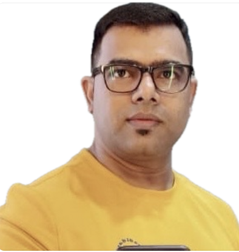
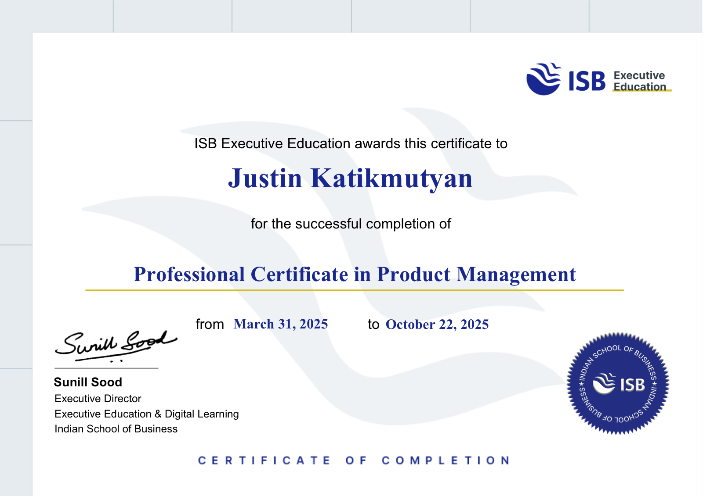
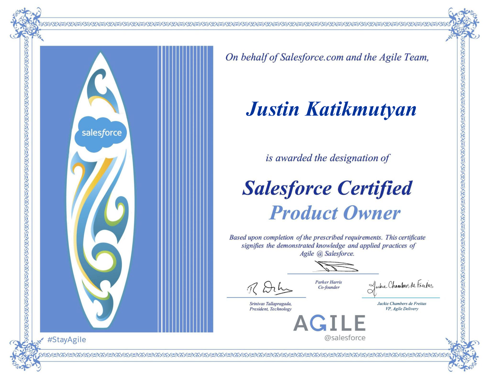

PM value: Most PMs access customer insight through NPS dashboards. I have been the customer's direct representative inside Salesforce engineering discussions — in real time, under pressure, with specific bug IDs, release timelines, and renewal consequences attached. I also bring proactive adoption intelligence: I know which customers are under-utilising the product and why.
PM value: Challenge severity framing, propose fix strategies, structure engineering briefs with business impact quantification, advocate for customer-angle re-evaluation of "by design" decisions — this is the core work of a PM in sprint. I have been doing it without the title.
PM value: Working knowledge of customer-facing behaviour across Scheduler, Mobile, Optimization, and Agentforce — and where each creates friction at scale. Fully current on the innovation agenda the JD calls out: Agentforce and Headless360 are not buzzwords to me, they are active customer implementation challenges I deal with daily.
PM value: Strong PMs define success before they build, then hold the team to it. I already own a metrics framework that spans customer satisfaction, operational efficiency, adoption, and team capability — the same dimensions a PM tracks against a product roadmap.
PM value: I did not ask the company to develop me into a PM. I developed myself, then came back to apply it. That is the growth mindset you want to retain.

